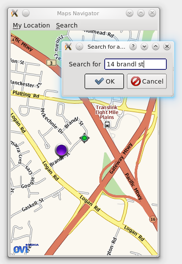

Now that we have a basic map widget, we want to add the capability to search for addresses and locations and create markers for them on the map.
Searching in the Location API is handled by use of the QGeoSearchManager, which we obtain in similar fashion to the MappingManager (in main() in part 1). As we want to create markers for search results and then be able to remove them for the next search (or perhaps other operations), we need some way to organise collections of markers.
To do this, we introduce a new class, MarkerManager:
class MarkerManagerPrivate;
class MarkerManager : public QObject
{
Q_OBJECT
public:
explicit MarkerManager(QGeoSearchManager *sm, QObject *parent=0);
~MarkerManager();
public slots:
void setMap(QGraphicsGeoMap *map);
void setMyLocation(QGeoCoordinate coord);
void search(QString query);
void removeSearchMarkers();
signals:
void searchError(QGeoSearchReply::Error error, QString errorString);
void searchFinished();
private:
MarkerManagerPrivate *d;
private slots:
void replyFinished(QGeoSearchReply *reply);
};
The MarkerManager tracks both the "My Location" marker and a list of search result markers. Implementing the My Location portion is nothing new:
class MarkerManagerPrivate
{
public:
Marker *myLocation;
QList<Marker*> searchMarkers;
QGraphicsGeoMap *map;
QGeoSearchManager *searchManager;
QSet<QGeoSearchReply*> forwardReplies;
};
MarkerManager::MarkerManager(QGeoSearchManager *searchManager, QObject *parent) :
QObject(parent),
d(new MarkerManagerPrivate)
{
d->myLocation = new Marker(Marker::MyLocationMarker);
d->searchManager = searchManager;
}
MarkerManager::~MarkerManager()
{
if (d->map)
d->map->removeMapObject(m_myLocation);
delete d->myLocation;
...
}
void MarkerManager::setMap(QGraphicsGeoMap *map)
{
...
d->map = map;
d->map->addMapObject(d->myLocation);
...
}
void MarkerManager::setMyLocation(QGeoCoordinate coord)
{
d->myLocation->setCoordinate(coord);
}
To implement searching, we call the QGeoSearchManager::search method, which returns a QGeoSearchReply. This reply object emits a signal finished() when the search results are available. It can also be constructed already finished, and we need to check for this first before connecting the signals.
We make use of the searchManager's version of the finished() signal, as it gives out the necessary QGeoSearchReply* parameter so that we can have one slot to handle both the case where the reply is constructed already finished, and the case where the signal fires later.
MarkerManager::MarkerManager(QGeoSearchManager *searchManager, QObject *parent) :
...
{
...
connect(d->searchManager, SIGNAL(finished(QGeoSearchReply*)),
this, SLOT(replyFinished(QGeoSearchReply*)));
}
void MarkerManager::search(QString query)
{
QGeoSearchReply *reply = d->searchManager->search(query);
d->forwardReplies.insert(reply);
if (reply->isFinished()) {
replyFinished(reply);
} else {
connect(reply, SIGNAL(error(QGeoSearchReply::Error,QString)),
this, SIGNAL(searchError(QGeoSearchReply::Error,QString)));
}
}
The QGeoSearchReply yields its results as a list of QGeoPlace instances. While these hold quite a bit of information, for now we'll just be using them for their coordinates.
void MarkerManager::replyFinished(QGeoSearchReply *reply)
{
if (!d->forwardReplies.contains(reply))
return;
// generate the markers and add them to the map
foreach (QGeoPlace place, reply->places()) {
Marker *m = new Marker(Marker::SearchMarker);
m->setCoordinate(place.coordinate());
d->searchMarkers.append(m);
if (d->map) {
d->map->addMapObject(m);
// also zoom out until marker is visible
while (!d->map->viewport().contains(place.coordinate()))
d->map->setZoomLevel(d->map->zoomLevel()-1);
}
}
d->forwardReplies.remove(reply);
reply->deleteLater();
emit searchFinished();
}
Next, we add two methods to MapsWidget to keep track of a MarkerManager instance associated with its map:
class MapsWidget : public QWidget
{
...
public:
void setMarkerManager(MarkerManager *markerManager);
MarkerManager *markerManager() const;
...
};
class MapsWidgetPrivate
{
public:
MarkerManager *markerManager;
...
};
And then add two small sections of code to connect them together:
void MapsWidget::initialize(QGeoMappingManager *manager)
{
d->map = new GeoMap(manager, this);
if (d->markerManager)
d->markerManager->setMap(d->map);
...
}
void MapsWidget::setMarkerManager(MarkerManager *markerManager)
{
d->markerManager = markerManager;
if (d->map)
d->markerManager->setMap(d->map);
}
Now we have basic search capability added to our code. But we still have no GUI to drive it, and so we'll focus on that in the next section.
Next we'll build a GUI around our map widget and add a search dialog to make use of the code we just wrote. Our finished GUI looks like this:

We won't cover building the GUI in too much detail (that being the subject of other tutorials), but the complete code is in the finished MapsDemo example in the QtMobility distribution.
Our GUI consists of a QMainWindow containing our MapsWidget and a QMenuBar. On the QMenuBar is an option for zooming to the current "My Location", and a menu for performing search operations.
Also part of the GUI is the dialog box displayed when selecting "Search for address or name" -- this is a simple QDialog subclass with a QFormLayout and a QDialogButtonBox.
In the MainWindow constructor, we simply set up the menubar and MapsWidget and other UI details. All initialization of Location-based details are in the MainWindow::initialize() slot. For the moment, we will simply assume that initialize() is called directly from the constructor (the purpose of this decoupling will be explained later).
void MainWindow::initialize()
{
if (serviceProvider)
delete serviceProvider;
QList<QString> providers = QGeoServiceProvider::availableServiceProviders();
if (providers.size() < 1) {
QMessageBox::information(this, tr("Maps Demo"),
tr("No service providers are available"));
QCoreApplication::quit();
return;
}
serviceProvider = new QGeoServiceProvider(providers[0]);
if (serviceProvider->error() != QGeoServiceProvider::NoError) {
QMessageBox::information(this, tr("Maps Demo"),
tr("Error loading geoservice plugin: %1").arg(providers[0]));
QCoreApplication::quit();
return;
}
mapsWidget->initialize(serviceProvider->mappingManager());
markerManager = new MarkerManager(serviceProvider->searchManager());
mapsWidget->setMarkerManager(markerManager);
connect(markerManager, SIGNAL(searchError(QGeoSearchReply::Error,QString)),
this, SLOT(showErrorMessage(QGeoSearchReply::Error,QString)));
mapsWidget->setMyLocation(QGeoCoordinate(-27.5796, 153.1));
}
As you can see, this performs more or less the same actions as our old code in main() from part 1 of the tutorial did. It fetches the first available service provider, then initializes the MapsWidget and MarkerManager using the appropriate Manager instances.
Additionally, we've added a setMyLocation() method to MapsWidget which simply calls the current MarkerManager's method of the same name, plus centreing the view on the marker.
The "Search for address or name" menu item sets off the showSearchDialog() slot:
void MainWindow::showSearchDialog()
{
SearchDialog sd;
if (sd.exec() == QDialog::Accepted) {
if (markerManager) {
markerManager->removeSearchMarkers();
markerManager->search(sd.searchTerms());
}
}
}
Which uses the methods on MarkerManager that we defined previously. So now we have a basic searchable mapping application. However, there is one big piece of functionality missing for a searchable map: consider if we had a provider that allowed us to search for local businesses. We might type in a business name in the Search dialog and press OK, and then be presented with tens or hundreds of businesses that match the name we typed from all around the world. Some of these results might not even be the kind of business we were looking for (partial text matches etc).
This can be solved with the addition of two key features: viewing the extra details about search results that we're currently throwing away; and adding the ability to limit the search area.
First up, we'll add some additional properties to the Marker class:
class Marker : public QGeoMapPixmapObject
{
....
public:
QString name() const;
void setName(QString name);
QGeoAddress address() const;
void setAddress(QGeoAddress addr);
bool moveable() const;
void setMoveable(bool moveable);
...
};
class MarkerPrivate
{
public:
...
QString name;
bool moveable;
QGeoAddress address;
};
And add code to MarkerManager to set them from search results:
void MarkerManager::replyFinished(QGeoSearchReply *reply)
{
...
foreach (QGeoPlace place, reply->places()) {
Marker *m = new Marker(Marker::SearchMarker);
m->setCoordinate(place.coordinate());
if (place.isLandmark()) {
QLandmark lm(place);
m->setName(lm.name());
} else {
m->setName(QString("%1, %2").arg(place.address().street())
.arg(place.address().city()));
}
m->setAddress(place.address());
m->setMoveable(false);
...
So now the data is available from the Marker objects. We want to show this to the user somehow, though, and the best means of doing this is probably a dialog box. We're going to do a dialog box that appears when the user clicks a marker, so we'll have to add click detection to MapsWidget and GeoMap, first.
We already have methods for handling mouse presses and releases over the map widget, so we will modify these. Add two private fields and a signal to GeoMap:
class GeoMap : public QGraphicsGeoMap
{
...
signals:
void clicked(Marker *marker);
private:
...
bool markerPressed;
QGeoMapObject *pressed;
...
};
We set the markerPressed flag when the mouse has been pressed over a map object, and set pressed to the map object in question.
void GeoMap::mousePressEvent(QGraphicsSceneMouseEvent *event)
{
panActive = true;
markerPressed = false;
QList<QGeoMapObject*> objects = mapObjectsAtScreenPosition(event->pos());
if (objects.size() > 0) {
pressed = objects.first();
markerPressed = true;
}
event->accept();
}
void GeoMap::mouseReleaseEvent(QGraphicsSceneMouseEvent *event)
{
panActive = false;
if (markerPressed) {
// check if we're still over the object
QList<QGeoMapObject*> objects = mapObjectsAtScreenPosition(event->pos());
if (objects.contains(pressed)) {
Marker *m = dynamic_cast<Marker*>(pressed);
if (m)
emit clicked(m);
}
markerPressed = false;
}
event->accept();
}
Finally, we need to pass this clicked() signal up through MapsWidget so that we can use it from outside. We do this by adding a signal and connecting GeoMap's signal to the signal on MapsWidget with the same name.
class MapsWidget : public QWidget
{
...
signals:
void markerClicked(Marker *m);
...
};
void MapsWidget::initialize(QGeoMappingManager *manager)
{
...
connect(d->map, SIGNAL(clicked(Marker*)),
this, SIGNAL(markerClicked(Marker*)));
}
Now that's done, creating a dialog box to display the address information is relatively trivial. The MarkerDialog class contains a QLineEdit for the name field, a readonly QLabel for the address, and two QDoubleSpinBoxes for latitude and longitude.
We connect up the MapsWidget's markerClicked() signal to a slot in MainWindow:
void MainWindow::showMarkerDialog(Marker *marker)
{
MarkerDialog md(marker);
if (md.exec() == QDialog::Accepted) {
marker->setName(md.markerName());
QGeoCoordinate c(md.latitude(), md.longitude());
marker->setCoordinate(c);
}
}
And now clicking on markers on the map yields a simple editing dialog box, so our first task is complete.
The QGeoSearchManager's search() method already comes with support for limited search areas -- by setting up a QGeoBoundingArea we can take advantage of this functionality.
Firstly, we'll modify the MarkerManager's search() method:
// declaration
void search(QString query, qreal radius=-1);
// implementation
void MarkerManager::search(QString query, qreal radius)
{
QGeoSearchReply *reply;
if (radius > 0) {
QGeoBoundingCircle boundingCircle(m_myLocation->coordinate(), radius);
reply = d->searchManager->search(query,
QGeoSearchManager::SearchAll,
-1, 0,
boundingCircle);
} else {
reply = d->searchManager->search(query);
}
if (reply->isFinished()) {
...
And now we need to modify the UI to expose this to the user. There are a few ways of doing this, but the option we'll take is to expose a QComboBox with some preset distances. This is easier to use on touch screen devices, especially, where entering numbers often takes much more effort from the user than selecting an option.
// in SearchDialog constructor
whereCombo = new QComboBox();
whereCombo->addItem(tr("Nearby (<10km)"), 10000);
whereCombo->addItem(tr("Within 30 mins drive of me (<25km)"), 25000);
whereCombo->addItem(tr("Within 100km of me"), 100000);
whereCombo->addItem(tr("Anywhere in the world"), -1);
whereCombo->setCurrentIndex(1);
formLayout->addRow(tr("Where"), whereCombo);
Then to get the radius value to put into search, we simply take the user data from the QComboBox, convert it to a qreal and pass it through.
So we now have a searchable map, with clickable markers and the ability to limit the search radius. The last feature we'll cover that relates to searching is the so-called "reverse geocode" technique.
Currently, if you click the My Location icon on our map application, a blank address is displayed. We can add the capability here to turn the current coordinates of the marker into an approximate address, and the technique is known as "reverse geocode" searching.
To implement this, we'll hook into the coordinateChanged() signal of the Marker object:
MarkerManager::MarkerManager(QGeoSearchManager *searchManager, QObject *parent) :
QObject(parent),
d(new MarkerManagerPrivate)
{
d->searchManager = searchManager;
d->myLocation = new Marker(Marker::MyLocationMarker);
d->myLocation->setName("Me");
...
// hook the coordinateChanged() signal for reverse geocoding
connect(d->myLocation, SIGNAL(coordinateChanged(QGeoCoordinate)),
this, SLOT(myLocationChanged(QGeoCoordinate)));
}
Then we perform the reverse lookup in the myLocationChanged() slot. This looks quite similar to the original search() method, with good reason, as the reverse geocode lookup is simply a special kind of search call.
void MarkerManager::myLocationChanged(QGeoCoordinate location)
{
QGeoSearchReply *reply = d->searchManager->reverseGeocode(location);
d->reverseReplies.insert(reply);
if (reply->isFinished())
reverseReplyFinished(reply);
}
void MarkerManager::reverseReplyFinished(QGeoSearchReply *reply)
{
if (!d->reverseReplies.contains(reply))
return;
if (reply->places().size() > 0) {
QGeoPlace place = reply->places().first();
d->myLocation->setAddress(place.address());
}
reply->deleteLater();
}
However, this isn't going to work very well with a GPS updating myLocation on a regular basis and a slow network connection, as the requests will pile up and the geocoded coordinates will lag behind the reported ones by quite a margin. A simple scheme to solve this relies only on two boolean flags:
class MarkerManagerPrivate
{
public:
...
// a reverse geocode request is currently running
bool revGeocodeRunning;
// a request is currently running, and my location has changed
// since it started (ie, the request is stale)
bool myLocHasMoved;
};
void MarkerManager::myLocationChanged(QGeoCoordinate location)
{
if (d->revGeocodeRunning) {
d->myLocHasMoved = true;
} else {
QGeoSearchReply *reply = d->searchManager->reverseGeocode(location);
d->reverseReplies.insert(reply);
d->myLocHasMoved = false;
if (reply->isFinished()) {
d->revGeocodeRunning = false;
reverseReplyFinished(reply);
} else {
d->revGeocodeRunning = true;
}
}
}
void MarkerManager::reverseReplyFinished(QGeoSearchReply *reply)
{
if (!d->reverseReplies.contains(reply))
return;
// set address, as before
d->revGeocodeRunning = false;
if (d->myLocHasMoved)
myLocationChanged(d->myLocation->coordinate());
d->reverseReplies.remove(reply);
reply->deleteLater();
}
A reverse geocode request is only sent if the previous one has finished -- if it hasn't finished, a flag is set so that the location will be refreshed at the conclusion of the previous request. This is far from a perfect scheme, but in practise it works quite well.
At the end of part 2 now, we have a searchable map with a simple GUI, clickable markers, the ability to limit search radius about our location, and reverse geocoding to work out the address of where we are. This is already quite a bit of useful functionality, but we will continue to extend it further.
In part 3, we will add support for using platform positioning methods such as GPS, and in part 4 we will add the ability to fetch directions to a given destination. Finally, in part 5 we will cover a number of points about means for achieving a better user experience on mobile platforms.